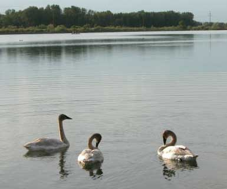
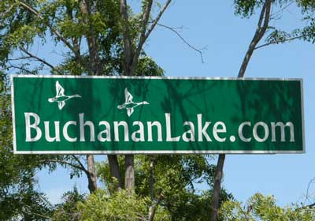
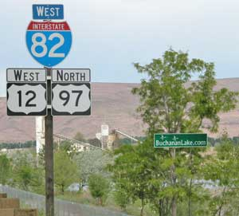

LL Buchanan Lake
Yakima, Washington
A lake with floating islands.

Barney's IslandThree Trumpeter Swan cygnets (young) on the lake a few years ago.
(Main info below the 2011 section)
October 2011 Report.... The NALMS meeting. The president of LL Buchanan Trust (one of the island, tree and lake guys) attended the North American Lake Management Society (NALMS) national meeting in Spokane Washington, October 2011. Over the three day conference a variety of topics relating to lake water quality and habitat were discussed.
The topics and discussions included issues related to City stormwater run-off being released into lakes, floating islands for contaminated water treatment, agricultural and city-origin phosphate contamination, lake habitat improvement techniques for raising various species of fish, monitoring and treating various water contaminates including those leaching from old dumps and toxic sites, etceteras.
The accrued knowledge will be put to good use, as time and financial wherewithal become available. The Trust enjoys managing the lake and its shore, to the highest affordable standards.
September 2011 Report..... A new 12 foot x 20 foot BioHaven island from FloatingIslandsWest, was started. It is on the shore, ready for planting and launching, but the island guys had to attend to other projects, so it will likely be finished in the spring.
May 2011 Report.... Photos on Betty's Island-6
Well now, Barney broke his island's anchor cable, again, so that matter was added to the annual spring tree planting and spiffy-up the lake shore and islands project.
The island guy is an inland land lubber, so he had no idea of how to anchor floating islands when he anchored them with a lot of heavy cable and buckets of concrete. Therefore his seacoast nephew belatedly counseled him on the matter, much to their amusement.
All the cable for the three islands was pulled back up out of the mud at the bottom of the lake, and relegated to a pile on the shore. New anchors were set by a cool scuba diving dude with enough high quality adventure stories to delay the otherwise efficient process, much to our enjoyment. Three 2,040 pound concrete blocks were provided by Central Premix Concrete Company and Jim the heavy equipment operator. One per island were floated out into position, suspended under a "float bag", towed by the boat guy whose fishing boat was so new that he volunteered it for the project, under his command, with the statement, "I don't want even a scratch on the boat". A bunch of slimy fish slopping around in the boat would have been okay, but not a scratch. Apparently there is a difference between fishermen and anchor setters.
Upon an accurate calculation for each anchor position ("Ah, looks like about the middle right here."), the scuba diving guy dove down below the float bag and cut the rope holding the 2,040 pound concrete block. Oh, one end of a 105 foot "up line" of thick floating polypro rope was tied to the block, and at the other end, to an A-2 polyform float. Rather impressive to see that rope and float suddenly zip across the lake surface then disappear at the speed of a falling one ton block of concrete. With the highly refined accuracy of our calculations, the top of the float was about a few feet under the surface, where a boat motor would not reach it, and it did not disrupt the visual beauty of the lake surface. That is the intent of a permanent anchor.
Oh, and we attached 170 feet of (sinking) Dacron rope "top line" to the "up line" below the float. It is to that, for each anchor, that we tied each island. I won't mention the illogical attributes of the previous 350 feet of heavy cable mostly mired in the mud at the bottom of the lake, but the new light rope tethers that do not touch the bottom facilitate a very rapid response to the shifting winds. The many folks who, upon seeing the islands and assume that they are "normal" islands with trees, and express their confusion by the seemingly different positions on different days, will be more confused by their more noticeable change in positions, especially when a wind shift or increase noticeably sails the islands to those new positions.
All that got done in a short day, despite the scuba diving adventure stories, because the scuba diving guy was that good. We would expose his identity, but it was an underwater operation, and this report is entirely above water. Our web slave assures us that the information will not be leaked to WikiLeaks. There are probably dozens of laws against floating islands, requiring dozens of government permits and permit fees to feed the insatiable DemocanRepublicrat Regime dedicated to driving American innovation and private enterprise out of America, to other countries.
All of that required a bit of sitting on Betty's Island, discussing the finer attributes of a fine bottle of Washington wine, with an occasional mention of the increasing damages to society perpetrated by government folks, if you can imagine that.
The islands were spiffied-up a bit, with one new tree planted on Betty's Island, to replace one that got a bit too nibbled by the geese and muskrats. All the other trees on the islands are doing well, growing fast, with several feet of tree roots wafting about in the water below the bottom of the soil variously suspended in steel mesh baskets or buckets. Barney got a new face mask. The project to add wider shore slope ramps to Pebbles Island did not get done. Next time.
The main goose nest on Betty's Island had already hatched. Pebbles Island had a goose nest with eggs. A duck nested in the goose nest on Barney's Island, so a goose made a new nest right next to the duck nest. While we were hastily upgrading the wire fence around a couple beaver-nibbled trees on Barney's Island, a duckling fully emerged from its egg, and started peeping. We promptly left the island as the Mallard drake duck was earnestly paddling toward the island on the other side, apparently responding to the peeping. He got aboard the island and glanced at us while walking to the nest.
And then it was back to the tree planting adventure, with 60 new trees planted around the lake shore. During the winter the beaver viciously attacked and cut down three good trees, by digging through rocks, under the wire fence, and pushing it up enough to cut the trees. The ratty little blithers were working on three more good trees, partially chomped. We added a few hundred dollars more of wire fence around those and other trees. The time and money required to plant the trees is minor compared to the time and money required to protect them from the beaver, primarily because our benevolent government bureaucrats who hate trees make it illogically expensive, with agency budget-excuse permits, paperwork, fees and restrictions, to protect private property by trapping the burgeoning urban population of beaver. One reason many hiway-side old gravel pit ponds look brushy, ugly and neglected is because the over-population of beaver slaughter all the good trees, and the equally insatiable government sorts make it impractical to trap the beaver. Tree planting for area beautification becomes beaver feeding for government bureaucracy budgets, with an uncontrolled beaver population. Add a few amusing descriptions of our dear friends with government jobs, and the writer will get back to the tree report.
Oh, the shore goose and duck nests were doing well, with one gaggle of goose goslings launching into the water world while the trees were being planted.
Evergreen trees were emphasized this year. The entire tree planting crew of two decided that next year those foo-foo flowering trees will be emphasized, because the few that were previously planted look rather pretty. Since the 1998 start of the shore and island arboretum project, about 2,000 trees, of 100 species, have been planted by LL Buchanan Trust and Central Premix Concrete Company. Each provide about half the work and expenses, and enjoy the project. There is not a high tree survival rate, due to the "soil" being sun-heated cobble rocks a couple feet over ground water, but the total survival of that many trees has made a shore area of small, slow growing trees that will be noticeable and esthetically pleasing in the future.
One of the three trunks of the two 80 year old black locust trees at the south end of the lake was cut down to give a new black walnut tree some sky room. That was a precision chain saw adventure, to avoid crushing the surrounding small trees. Since two people were involved, there was more opinion discussing than chain sawing, but the final cut dropped the huge trunk right where it damaged no other trees. The other guy was right this time.
The cormorants continue to command the tall snag perch on Betty's Island. Well, if you can't attract eagles or ospreys, cormorants are adequate for a visual accent.
And the island crew of two devised a new idea that may noticeably show up if there is enough wherewithal to get the materials this summer, or some time.
That is the full report for the moment. Now get back to your own tree planting adventures to compensate for the slaughter of Brazilian rain forest trees while city-bred environmentalists use wood products, support more government restrictions on everybody else, and do not plant trees, or something like that.
The rarely changing main information........
This website offers an ongoing account of a private gravel pit pond. Its shore is being affordably planted to an arboretum. The lake and shore waterfowl habitat are being enhanced. Floating islands drift around in the middle. The benefits are for waterfowl and trees. The effort is also for the visual enjoyment of people who drive by on the adjacent freeway, and walk by on the adjacent public foot path.

LL Buchanan Lake is a wholly private 50 acre lake located within the east side of Yakima Washington, along the Yakima River, at 2000 East Beech Street (end of the street). It is Yakima's largest lake. Its unique nature and location adjacent to a beautiful city offers a superlative economic opportunity.
Yakima, located in sunny central Washington, is an irrigated valley of diverse agriculture, including a variety of fruits and fine wine grapes. The Yakima River valley divides the forested Cascade Mountain Range, with its glacier-clad mountains and alpine lakes, from the agricultural fields and sage lands of the Columbia River Valley and eastern half of the State. The diversity of opportunity is magnificent.
Some number of years ago the lake area was rocky land with scrub trees and brambles, next to the Yakima River. LL Buchanan, one of Yakima's early businessmen, fed livestock there. The area where he fed waste fruit peelings, cores and seeds from the local fruit canneries, facilitated the peach pits that kept spouting into trees. That area was later amusingly referenced as a peach orchard. A concrete company leased the land. The gravel was handy. Time went by. Yakima grew. A lot of concrete was made. The gravel pit got bigger. It got to be about 50 acres big and 120 feet deep. It was a uniquely deep deposit of high quality rocks. That was all the bigger it could get, so they took out the last load of rocks and turned off the water pumps that were keeping out the water.
Nice lake.
Geese and ducks like it, a lot, especially its floating islands. Trumpeter swans resided on the lake awhile. Bald eagles are often in the area. A pair of ospreys nest at the lake. Herons, pelicans, cormorants, loons and other such birds enjoy the lake. Redwing Blackbirds, Goldfinches, and other small birds thrive in the vegetative habitat of two old settling ponds beside the lake. The fine folks in the Yakima Valley Audubon Society have a lot of great bird information for the area.
Beaver enjoy the lake and the willows, much to the apprehension of the better shoreline trees protected by wire fence skirts. Rabbits hop among the bushes. Mink, otter and other critters are occasionally seen. The local skunk is friendly, and so is the lake monster.
The depth of the lake maintains a cool thermal mass with a number of advantages, including the upper strata sustaining a beautiful clear green-blue color, often mentioned by viewers.
The adjacent Swan Pond, with its beaver house and beaver dams among the reeds, offers shallow water appreciated by the feeding waterfowl and nesting small birds. It is a natural wildlife habitat gem within the city, viewable from the paved, higher foot path along the side of the pond and lake. The concert of bird songs grace the area, and complement the carpet of bright native flowers with varied color themes naturally changing in several-year cycles. Delightful yellow iris gradually replaced the beautiful purple loosestrife, much to the expressed irritation of the government weed bureaucrats who view wildlife habitat and bird homes as "weeds" that must be destroyed. Pitiable government chaps rarely recognize or understand the real world outside their perpetually desperate agency budget excuses.
Four small islands near the shore of the lake, and three artificial floating islands in the middle of the lake, enhance waterfowl nesting protection. The floating islands (Barney's Island, Pebbles Island and Betty's Island) drift around on long anchored tethers. They are each growing a small forest. Barney's Island is visible in the current GoogleEarth photo taken before the other two islands were launched. The Google Earth Panoramio (blue dot) option offers pictures of the islands.
To enhance the lake shore, varied species of seedling trees are being planted each year, to eventually complement the adjacent Yakima Area Arboretum. The tree planting and vegetation improvement projects benefit the visual esthetics and wildlife habitat. The current tree species list and photos are on the Trees pages. The seedling trees are purchased from the good folks at Lawyer Nursery. The arboreal artistry of the Leo and Laura Buchanan Lake Habitat is certain to make this one of Yakima's finest areas of the future.

The Yakima Area Arboretum is just across a waterway along the south end of the lake property. The Arboretum has a spacious lawn planted with two of each tree species which can grow in central Washington. With the shrubs, over 2,000 plant species grow at the arboretum. It is a science-based arboretum open to members and the general public. The Japanese garden, visitor center solarium and meeting room are often rented for weddings, events and meetings. It is one of the priority places to visit in Yakima. A Yakima resident would distinguish herself or himself by showing visitors the Arboretum, as a member. A city park is adjacent to the Arboretum.The Yakima River flows along the east side of the lake, separated by a dike with a paved public foot path offering an elevated view of the lake and river. In view to the west, Mt. Rainier and Mt. Adams are two gem-white, glacier-clad volcanoes in the Cascade Range. The web slave recommends them both. Put them on your must-climb list. The popular recreation path extends for several miles along the Yakima River. The dike is separated from the lake by a small flowing waterway. People using the footpath complement the view of the lake, its untrampled shore, its waterfowl, the other birds and animals, with more natural diversity than the environmentally sterilized public parks to the north and south of the lake.
Barney's Island, Betty's Island and Pebbles Island have become a landmark (or watermark) of Yakima. Floating islands are fun. Other projects are planned.
Along the north shore of LL Buchanan Lake are twenty five acres of land and a six acre shallow pond area, in part available for new opportunities. The land is leased by Central Premix Concrete Company, offering the latest products and processes. If you need concrete or gravel, you will appreciate the products and service of the Central Premix folks. They have made high standards a fun endeavor.
To the north are Sarge Hubbard Park, a hotel complex, a restaurant, the Washington Fruit Commission office building, a Wal-Mart store, and an auto dealership.
Interstate 82 is on the west side of the lake. The Yakima Sundome convention center, the Central Washington State fairgrounds, and downtown Yakima are on the other side of I-82. I-82 offers convenient access to the Yakima Airport. Yakima is the hub area for central Washington. As well as points north, south and east, I-82 directly accesses highways to three passes over the beautiful Cascade Range, to the Seattle area and western Washington. Two of the passes have downhill skiing facilities.
I-82 also offers convenient access to the Yakima and Columbia valley vineyards and wineries. The ideal growing conditions for wine grapes involve the volcanic soils with abundant sun and irrigation water. With those ideal conditions and no dependency on the timing of rain, vintage years are an annually recurrent event. Among a few dozen of my other favorites, I recommend the magnificent wines of Tefft Cellars near Sunnyside, and The Tasting Room at Naches Heights. The other Yakima Valley wineries are worthy of your consideration. You will find wines that match your palate's most favored preference. The unpretentious nature of friendly Yakima valley farmers and vintners puts the winery tours high on the list of reasons to visit the area.
At some point in time, an upscale development will most likely utilize LL Buchanan Lake's unique array of property characteristics. Lease opportunities are currently available for a portion of the area.
With the floating islands having become a primary visual attraction in Yakima, often mentioned in casual conversation, an innovative restauranteur may recognize a floating restaurant on the lake as the most sustainably profitable restaurant in central Washington, in full view of travelers on the freeway, and frequented by people walking on the adjacent public foot path. People like floating islands. Well, of course fish would be prominent on the menu.
Inquiries regarding this property may be made to Doug at Buchanan.ws (replace at with @).
LL Buchanan Trust wishes you the best in all things.
Barney's Island
Betty's Island-1
Betty's Island-2
Betty's Island-3
Betty's Island-4
Betty's Island-5
Betty's Island-6
Pebbles Island
Aerial Photos
Consulting
Neighbors
History
Swans
Birds
Trees
Trees-2
Trees-3
Lake
Links